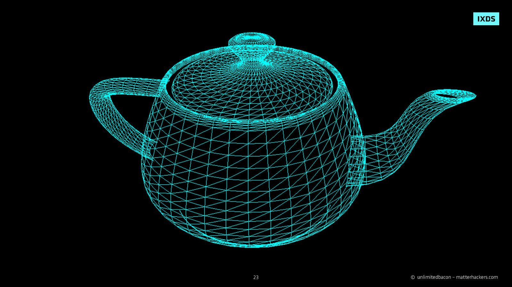

Компьютерная графика
- Главная страница
- Больше информации о компьютерной графике
- Форма посетителя сайта
- Использованные источники
- Информация о графических редакторах
Время:
Что такое компьютерная графика
Компьютерная графика (3D-графика) занимается созданием изображений и искусства с помощью компьютеров. Сегодня компьютерная графика является основной технологией в цифровой фотографии, кино, видеоиграх, цифровом искусстве, дисплеях мобильных телефонов и компьютеров, а также во многих специализированных приложениях. Было разработано множество специализированного оборудования и программного обеспечения, причем большинство устройств оснащено графическим аппаратным обеспечением. Это обширная и недавно развивающаяся область компьютерной науки. Термин был придуман в 1960 году исследователями компьютерной графики Верном Хадсоном и Уильямом Феттером из Boeing. Часто используется сокращение CG или, в контексте кино, компьютерная генерация изображений (CGI). Нехудожественные аспекты компьютерной графики являются предметом исследований в области компьютерных наук.
Что можно считать компьютерной графикой
К CG можно отнести и визуальный ряд, и даже одно изображение, сделанное с помощью компьютерных технологий. Сюда входят создание, манипулирование и рендеринг визуального контента с помощью компьютеров.
В целом, компьютерная графика охватывает широкий спектр техник и методов, которые позволяют создавать и визуализировать графические изображения с помощью компьютеров, и она находит применение в различных областях, от развлекательной индустрии до научных и инженерных исследований.
Какие CG-произведения произвели революцию
Первые ЭВМ использовались только для вычислений, а первая графика представляла собой узоры, которые образовывали включающиеся и выключающиеся лампы накаливания. Одной из первых анимаций была «Кошечка» в растровой графике. Её автор — советский математик Николай Константинов. А уже потом компьютерная графика начала развиваться и становиться сложнее.
Хотя CG применялась в мультипликации ещё до появления полноценных 3D-мультфильмов, настоящую революцию в сфере анимации произвела студия Pixar.
История компьютерной графики насчитывает несколько ключевых моментов, когда определенные CG-произведения действительно произвели революцию и повлияли на развитие этой области. Вот несколько примеров:
- "Терминатор 2: Судный день" (1991) - Режиссер Джеймс Кэмерон использовал в фильме значительное количество компьютерной графики, включая реалистичные эффекты жидкого металла, созданные Industrial Light & Magic. Эти эффекты стали вехой в истории компьютерной графики в кино и показали, что CG может быть использована для создания реалистичных спецэффектов.
- "Красавица и чудовище" (1991) - Этот мультфильм студии Disney был первым полностью цифровым фильмом, использующим технологию CAPS (Computer Animation Production System). Он продемонстрировал потенциал компьютерной анимации для создания красивых и сложных анимированных фильмов.
- "Toy Story" (1995) - Этот фильм студии Pixar стал первым полнометражным анимационным фильмом, созданным исключительно с использованием компьютерной графики. "Toy Story" открыл новую эру в анимации и утвердил позицию компьютерной анимации как основного жанра в кино.
- "Аватар" (2009) - Режиссер Джеймс Кэмерон снова сделал значимый вклад в развитие компьютерной графики с помощью фильма "Аватар". Этот фильм использовал передовые технологии для создания реалистичных виртуальных миров и персонажей, устанавливая новые стандарты для визуальных эффектов.
- "Властелин колец: Братство кольца" (2001) - Эпическая трилогия Питера Джексона впервые продемонстрировала масштабное использование компьютерной графики для создания вымышленных миров, создания цифровых персонажей и эпических битв.
Кадр из фильма Терминатор 2